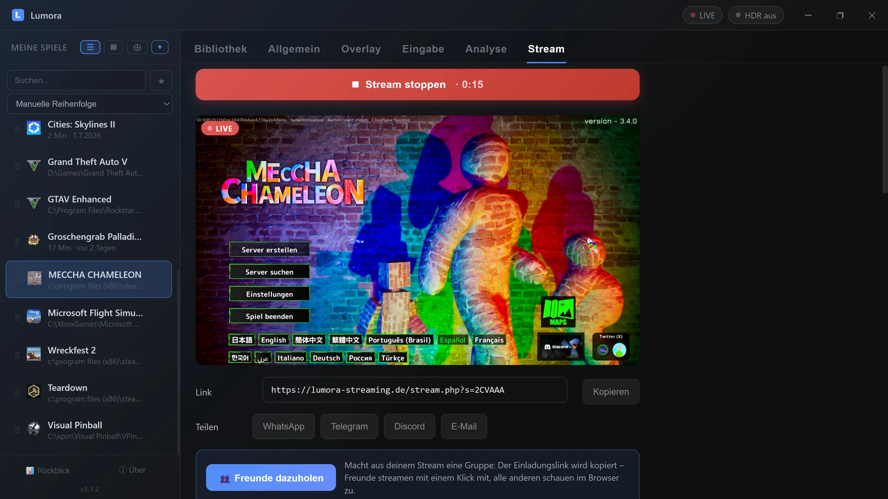
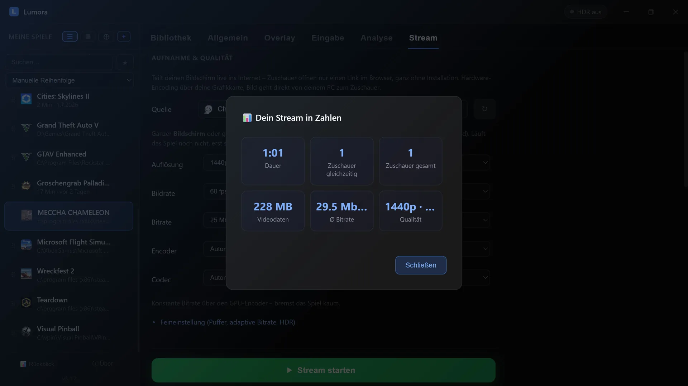

Stream your game in 4K to friends – free, direct & no account
You want your friends to see your game in actual good quality – not as a blurry, stuttering mess? Lumora streams your game in up to 4K at 60 fps straight to any browser. No subscription, no sign-up, no server in between.
⬇ Download Lumora for freeFor Windows 10 & 11 · no registration · open source

How it works
- Start streaming: pick a game window or screen, one click (or a hotkey mid-game) – done. Connection setup is automatic; the public link is ready in about two seconds.
- Send the link: “Invite friends” copies the invite link for the whole crew. Viewers simply open it in a browser; friends running Lumora join the group from the same link with one click and stream their own game back.
- Watch in the browser: PC, tablet or phone – viewers only need the link. No install, no account. The group view shows everyone in a grid; a tap picks whose audio you hear.
Why the quality is this good
- Up to 4K / 60 fps / 25 Mbit/s constant – encoded by your GPU's hardware encoder (NVIDIA, AMD, Intel). Your game barely loses any performance.
- Direct connection (P2P): video and audio go straight from your PC to the viewer. No vendor server that recompresses your stream.
- Adaptive bitrate: if a viewer's connection weakens, Lumora steps the bitrate down – and back up once things stabilize. No constant stuttering, no manual tweaking.
- Game-only audio: sharing a single window transmits only that game's sound – private music, calls and notifications stay out.
- HDR games are converted properly, so viewers without HDR displays see correct colors.
- No router fiddling: automatic port setup (UPnP), IPv6 direct path for DS-Lite/CGNAT connections, optional custom TURN server – all built in.
After the stream: your numbers
As soon as you end the stream, Lumora shows you a short summary: how long you were live, how many people watched, how much video data was transferred and what quality you streamed at.

Groups: play together, watch each other
One click on “Invite friends” on a running stream creates the group and copies the invite link. Anyone opening it with Lumora joins instantly via “Join with Lumora” – their own stream starts along automatically, and your own PCs on the same network even detect the group by themselves. No typing codes. Anyone without a PC opens the same link in a browser (works on iPhone too) and sees all streams side by side in a grid: fullscreen or spotlight per click, audio and volume per person, the whole grid as picture-in-picture, live stats on demand. The group doesn't depend on anyone – whoever leaves, leaves; everything keeps running for everyone else.
Frequently asked questions
What do my friends need?
Just a browser. Open the link, watch – with sound, fullscreen if they like. No app, no account.
How much delay does the stream have?
Typically under a second, thanks to the direct connection (WebRTC). The receive buffer is adjustable: short for minimal delay, longer for maximum smoothness on shaky connections.
How many viewers can watch?
Honest answer: your internet upload is the limit, because every viewer receives the stream directly from you (bitrate × viewers). Ideal for your circle of friends – for hundreds of viewers, platforms with distribution servers are the right choice.
What does it cost?
Nothing. No ads, no subscription, no quality paywall. Lumora is free and open source.
More from Lumora
Comparison: free 4K streaming vs. subscription models →
Show FPS, GPU & CPU stats in-game (gaming OSD) →
Control the whole launcher with a gamepad →